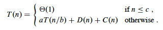
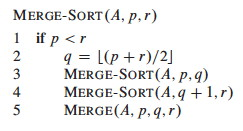
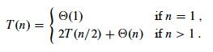
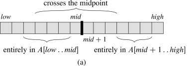
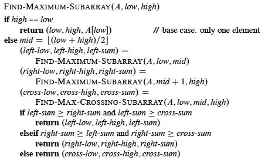
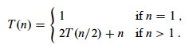
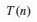
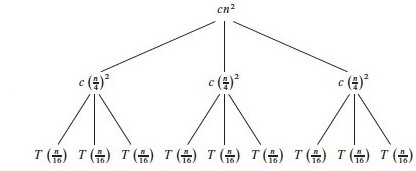
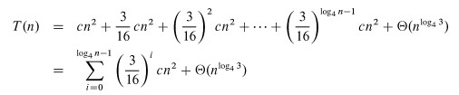

Outline
- Divide & Conquer and Recurrences
- Substitution Method
- Recursion Trees
- Master Theorem & Method
Divide & Conquer Strategy
Divide the problem into subproblems that are smaller instances of the same problem. Conquer the subproblems by solving them recursively. If the subproblems are small enough, solve them trivially or by "brute force." Combine the subproblem solutions to give a solution to the original problem.
Recurrences
The recursive nature of D&C leads to recurrences, or functions defined in terms of:
- one or more base cases, and
- itself, with smaller arguments.
Reviewing from Topic #2, a common (but not the only) form of recurrence is as follows. Let T(n) be the running time on a problem of size n.
- If n is below some constant (often, n=1), we can solve the problem directly with brute force or trivially in Θ(1) time.
- Otherwise we divide the problem into a subproblems, each 1/b size of the original.
- We pay cost D(n) to divide the problems and C(n) to combine the solutions.
- We also pay cost aT(n/b) solving subproblems.
Then the total time to solve a problem of size n can be expressed as:

Some technical points should be made:
- Subproblems are not constrained to being a constant fraction of the original problem size, for example, you can have T(n) = T(n-1) + Θ(1). (What's an example algorithm that this describes?)
- There can be other forms, such as multiple ways of dividing the problem. The book gives an example page 91 that divides the problem into 1/3 and 2/3 parts, requiring terms for T(n/3) and T(2n/3)
- Floors and ceilings can easily be removed and don't affect the solution to the recurrence.
- Boundary conditions (the smaller order terms that result from base cases) are usually Θ(1) and are omitted from asymptotic analyses, though they do matter for exact solutions.
- Recurrences can be inequalities. We use Big-O or Ω as appropriate.
Today we cover three approaches to solving such relations: substitution, recursion tree, and the master method. But first, we look at two examples, one of which we have already seen ...
Merge Sort
Sort an array A[p .. r] of comparable elements recursivly by divide and conquer:
Divide: Given A[p .. r], split the given array into two subarrays A[p .. q] and A[q+1 .. r] where q is the halfway point of A[p .. r]. Conquer: Recursively sort the two subarrays. If they are singletons, we have the base case. Combine: Merge the two sorted subarrays with a (linear) procedure Merge ... 
We have seen in Topic 2 that this has the following recurrence (please review Topic 2 if you don't see why):

Recursive Solution to Maximum Subarray
Suppose you have an array of numbers and need to find the subarray with the maximum sum of elements in the subarray. (The problem is trival unless there are negative numbers involved.)

The book provides a not very convincing application: there are applications to graphics (2D version: finding the brightest spot in an image).
The following algorithm is not the fastest known (a linear solution exists), but it illustrates divide and conquer. The solution strategy, given an array A[low .. high], is:
Divide the subarray into two subarrays of equal size as possible by finding the midpoint mid of the subarrays. Conquer by finding a maximum subarray of A[low .. mid] and A[mid+1 .. high]. Combine by also finding a maximum subarray that crosses the midpoint, and using the best solution of the three (the subarray crossing the midpoint and the best of the solutions in the Conquer step).
The strategy works because any subarray must lie in one of these three positions:

Pseudocode
Recursion will handle the lower and upper halves. The algorithm relies on a helper to find the crossing subarray. Any maximum subarray crossing the midpoint must include arrays ending at A[mid] and starting at A[mid+1]:

Therefore the pseudocode finds the maximum array on each side and adds them up:

It should be clear that the above is Θ(n). The recursive solution follows.

Check your understanding: Where is the work done? What adds up the values in the left and right subarrays?
Analysis
The analysis relies on the simplifying assumption that the problem size is a power of 2 (the same assumption for merge sort). Let T(n) denote the running time of FIND-MAXIMUM-SUBARRAY on a subarray of n elements.
Base case: Occurs when high equals low, so that n=1: it just returns in Θ(1) time.
Recursive Case (when n>1):
- Dividing takes Θ(1) time.
- Conquering solves two subproblems, each on an array of n/2 elements: 2T(n/2).
- Combining calls FIND-MAX-CROSSING-SUBARRAY, which takes Θ(n), and some constant tests: Θ(n) + Θ(1). T(n) = Θ(1) + 2T(n/2) + Θ(n) + Θ(1) = 2T(n/2) + Θ(n).
The resulting recurrence is the same as for merge sort:
So how do we solve these? We have three methods: Substitution, Recursion Trees, and the Master Method.
Substitution Method
Don't you love it when a "solution method" starts with ...
- Guess the solution!
- Use induction to find any unspecified constants and show that the solution works.
Recursion trees (next section) are one way to guess solutions. Experience helps too. For example, if a problem is divided in half we may expect to see lg n behavior.
As an example, let's solve the recurrence for merge sort and maximum subarray. We'll start with an exact rather than asymptotic version:

Guess: T(n) = n lg n + n. (Why this guess?)
Induction:
Basis: n = 1 ⇒ n lg n + n = 1 lg 1 + 1 = 1 = T(n).
Inductive Step:
Inductive hypothesis is that T(k) = k lg k + k for all k < n. We'll use k = n/2, and show that this implies that T(n) = n lg n + n. First we start with the definition of T(n); then we substitute ...

Induction would require that we show our solution holds for the boundary conditions. This is discussed in the textbook.
Normally we use asymptotic notation rather than exact forms:
- writing T(n) = 2T(n/2) + O(n),
- assuming T(n) = O(1) for sufficiently small n,
- not worrying about boundary or base cases, and
- writing solutions in asymptotic notation, e.g., T(n) = O(n lg n).
If we want Θ, sometimes we can prove big-O and Ω separately "squeezing" the Θ result.
But be careful when using asymptotic notation. For example, suppose you have the case where a=4 and b=4 and want to prove T(n) = O(n) by guessing that T(n) ≤ cn and writing:

One must prove the exact form of the inductive hypothesis, T(n) ≤ cn.
See the text for other strategies and pitfalls.
Problems 4.3-1 and 4.3-2 are good practice problems.
Recursion Trees
Although recursion trees can be considered a proof format, they are normally used to generate guesses that are verified by substitution.
- Each node represents the cost of a single subproblem in the set of recursive invocations
- Sum the costs with each level of the tree to obtain per-level costs
- Sum the costs across levels for the total cost.
A Familiar Example
We have already seen recursion trees when analyzing the recurrence relations for Merge Sort:


The subproblems are of size n/20, n/21, n/22, .... The tree ends when n/2p = n/n = 1, the trivial subproblem of size 1.
Thus the height of the tree is the power p to which we have to raise 2 before it becomes n, i.e., p = lg n. Since we start at 20 there are lg n + 1 levels. Multiplying by the work cn at each level, we get cn lg n + cn for the total time.
A More Complex Example
A more complex example is developed in the textbook for
T(n) = 3T(n/4) + Θ(n2)
which is rewritten (making the implied constant explicit) as
T(n) = 3T(n/4)+ cn2
 node, T(n) = 3T(n/4) +cn2.
We can develop the recursion tree in steps, as follows. First, we begin the
tree with its root 
Now let's branch the tree for the three recursive terms 3T(n/4). There are three children nodes with T(n/4) as their cost, and we leave the cost cn2 behind at the root node.
We repeat this for the subtrees rooted at each of the nodes for T(n/4): Since each of these costs 3T((n/4)/4) +c(n/4)2, we make three branches, each costing T((n/4)/4) = T(n/16), and leave the c(n/4)2 terms behind at their roots.

Continuing this way until we reach the leaf nodes where the recursion ends at trivial subproblems T(1), the tree looks like this:

Subproblem size for a node at depth i is n/4i, so the subproblem size
reaches n = 1 when (assuming n a power of 4) n/4i = 1, or when i =
log4n.
Including i = 0, there are log4n + 1 levels. Each level has 3i nodes.
Substituting i = log4n into 3i, there are 3log4n nodes in the bottom
level.
Using alogbc = clogba, there are nlog43 in the bottom level (not n, as
in the previous problem).
Adding up the levels, we get:

It is easier to solve this summation if we change the equation to an
inequality and let the summation go to infinity (the terms are decreasing
geometrically), allowing us to apply equation A.6 (∑k=0,∞xk = 1/1-x):

Additional observation: since the root contributes cn2, the root dominates the cost of the tree, and the recurrence must also be Ω(n2), so we have Θ(n2).
Please see the text for an example involving unequal subtrees. For practice, exercises 4.4-6 and 4.4-9 have solutions posted on the book's web site.
Master Theorem & Method
If we have a divide and conquer recurrence of the form
T(n) = aT(n/b) + f(n)
where a ≥ 1, b > 1, and f(n) > 0 is asymptotically positive,
then we can apply the master method, which is based on the master theorem. We compare f(n) to nlogba under asymptotic (in)equality:
Case 1: f(n) = O(nlogba - ε) for some constant ε > 0.
(That is, f(n) is polynomially smaller than nlogba.)
Solution: T(n) = Θ(nlogba).
Intuitively: the cost is dominated by the leaves.
Case 2: f(n) = Θ(nlogba), or more generally (exercise 4.6-2): f(n) = Θ(nlogbalgkn), where k ≥ 0.
(That is, f(n) is within a polylog factor of nlogba, but not smaller.)
Solution: T(n) = Θ(nlogbalgn), or T(n) = Θ(nlogbalgk+1n) in the more general case.
Intuitively: the cost is nlogbalgk at each level and there are Θ(lgn) levels.
Case 3: f(n)= Ω(nlogba + ε) for some constant ε > 0, and f(n) satisfies the regularity condition af(n/b) ≤ cf(n) for some constant c<1 and all sufficiently large n.
(That is, f(n) is polynomially greater than nlogba.)
Solution: T(n) = Θ(f(n)),
Intuitively: the cost is dominated by the root.
Important: there are functions that fall between the cases!
Examples
T(n) = 5T(n/2) + Θ(n2)
- a = 5, b = 2, f(n) = n2
- Compare n2 to nlogba = nlog25.
- log25 - ε = 2 for some constant ε > 0.
- Case 1: T(n) = Θ(nlg 5).
T(n) = 27T(n/3) + Θ(n3 lg n)
- a = 27, b = 3, f(n) = n3 lg n
- Compare n3 lg n to nlog327 = n3
- Case 2 with k = 1: T(n) = Θ(n3 lg2 n).
T(n) = 5T(n/2) + Θ(n3)
- a = 5, b = 2, f(n) = n3
- Compare n3 to nlog25
- log25 + ε = 3 for some constant ε > 0.
Check regularity condition (not necessary since f(n) is polynomial:
af(n/b) = 5(n/2)3 = 5n3/8 ≤ cn3 for c = 5/8 < 1.Case 3: T(n) = Θ(n3).
T(n) = 27T(n/3) + Θ(n3 / lg n)
- a = 27, b = 3, f(n) = n3 / lg n
- Compare n3/lg n to nlog327 = n3
- Cases 1 and 3 won't work as no ε can adjust the exponent of 3 to account for the 1/lgn = lg−1n factor. Only hope is Case 2.
- But n3/lg n = n3 lg−1n ≠ Θ(n3 lgk n) for any k ≥ 0.
- Cannot use master method.
- Could try substitution, which requires a guess. Drawing the full recursion tree would be tedious, but perhaps visualizing its general form would help with the guess.
Next
Chapter 12, Binary Search Trees (entire chapter), to which we can apply divide & conquer and use recurrence relations.
Dan Suthers Last modified: Sat Feb 8 02:42:12 HST 2014
Images are from the instructor's material for Cormen et al. Introduction to
Algorithms, Third Edition.